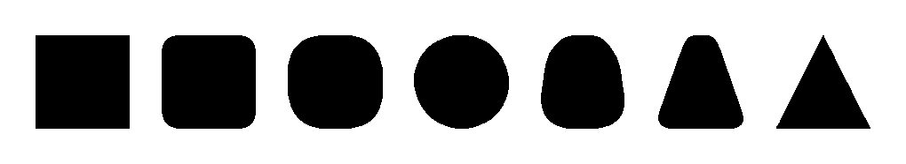
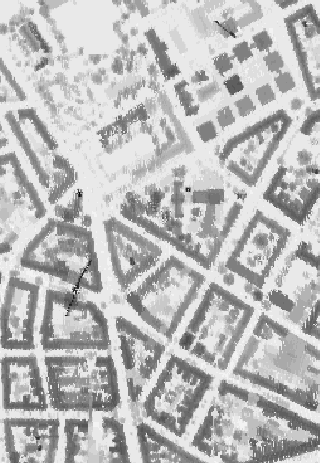
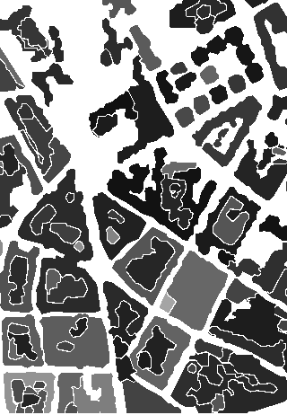
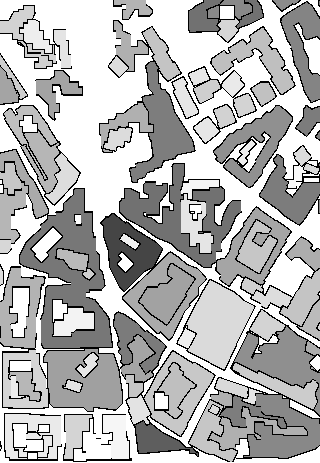

Shape Analysis
Shape plays an important part in the processing of visual information,
from art through to science,
and within computer vision there have been many applications of shape
to aid in the analysis of images.

We have developed shape descriptors for a variety of types of shape,
for instance to measure
linearity, circularity, ellipticity, rectangularity, and triangularity
(for more detail on convexity measures see here).
There are no standard methods for computing rectilinearity, but it has
many potential applications.
Rectilinear structures often correspond to human-made structure,
and are therefore justified as attentional cues for further processing.
For instance,
in aerial image processing and reconstruction,
where building footprints are often rectilinear on the local ground plane,
building structures, once recognized as rectilinear can be matched to corresponding
shapes in other views for stereo reconstruction.
The images below show a Digital Elevation Model
Some simple noise filtering and segmentation techniques were applied
to produce a set of polygons, and
they are coloured with intensities proportional to their
rectilinearity;
thus rectilinear shapes generally appear bright.
The third image shows the effects of
applying a snake-based refinement which incorporates rectilinearity in
addition to proximity to the original data.
Deviations from rectilinearity have been corrected if it does not require
excessive deformation of the shape.



More details are given in:
-
J. Zunic, P.L. Rosin,
"Measuring Shapes with Desired Convex Polygons",
IEEE Transactions Pattern Analysis and Machine Intelligence,
vol. 42, no. 6, pp. 1394-1407, 2020.
Post-print|DOI: 10.1109/TPAMI.2019.2898830
-
P. Corcoran, J. Zunic, P.L. Rosin,
"A Multi-Scale Topological Shape Model for Single and Multiple Component Shapes",
Journal of Visual Communication and Image Representation, vol. 64, 102617, 2019.
Post-print|DOI: 10.1016/j.jvcir.2019.102617
-
P.L. Rosin, J. Pantovic, J. Zunic,
"Measuring linearity of curves in 2D and 3D",
Pattern Recognition,
vol. 49, pp. 65-78, 2016.
Post-print|DOI: 10.1016/j.patcog.2015.07.011
-
P.L. Rosin, J. Pantovic, J. Zunic,
"Measuring Linearity of Connected Configurations of a Finite Number of 2D and 3D Curves",
Journal of Mathematical Imaging and Vision,
vol. 53, no. 1, pp. 1-11, 2015.
Post-print|DOI: 10.1007/s10851-014-0542-z
-
J. Zunic, K. Hirota, P.L. Rosin,
"Note on the shape circularity measure method based on radial moments",
Journal of Electronic Imaging, vol. 23, no. 2, 029701, 2014.
Post-print|DOI: 10.1117/1.JEI.23.2.029701
-
J. Zunic, P.L. Rosin,
"Measuring Linearity of Open Planar Curve Segments",
Image and Vision Computing,
vol. 29, no. 12, pp. 873-879, 2011.
Post-print|DOI: 10.1016/j.imavis.2011.10.002
-
P.L. Rosin, J. Zunic,
"Orientation and Anisotropy of Multi Component Shapes from Boundary Information",
Pattern Recognition, pp. 2147-2160, vol. 44, no. 9, 2011.
Post-print|DOI: 10.1016/j.patcog.2011.02.018
-
P.L. Rosin, J. Zunic,
"Measuring Squareness and Orientation of Shapes",
J. Math. Imaging Vis.,
pp. 13-27, vol. 39, 2011.
Post-print|DOI: 10.1007/s10851-010-0221-7
-
J. Zunic, K. Hirota, P.L. Rosin,
"A Hu moment invariant as a shape circularity measure",
Pattern Recognition, vol. 43, no. 1, pp. 47-57, 2010.
Post-print|DOI: 10.1016/j.patcog.2009.06.017
-
J. Zunic, P.L. Rosin,
"An alternative approach to computing shape orientation with an application to compound shapes",
International Journal of Computer Vision,
vol. 81, no. 2, pp. 138-154, 2009.
DOI: 10.1007/s11263-008-0149-1
-
P.L. Rosin, J. Zunic,
"Probabilistic convexity measure",
IET Image Processing,
vol. 1, no. 2,
pp. 182-188, 2007.
Post-print|
DOI: 10.1049/iet-ipr:20060185
-
P.L. Rosin,
"A two-component rectilinearity measure",
Computer Vision and Image Understanding,
vol. 109, no. 2, pp. 176-185, 2008.
DOI: 10.1016/j.cviu.2007.09.010
-
J. Zunic, P.L. Rosin,
"Convexity measure for shapes with partially extracted boundaries",
Electronics Letters,
vol. 43, no. 7, pp. 380-382, 2007.
Post-print|
DOI: 10.1049/el:20070280
-
J. Zunic, P.L. Rosin, L. Kopanja,
"On the Orientability of Shapes",
IEEE Transactions on Image Processing,
vol. 15, no. 11, pp. 3478-3487, 2006.
Post-print|
DOI: 10.1109/TIP.2006.877527
-
P.L. Rosin, J. Zunic,
"Measuring rectilinearity",
Computer Vision and Image Understanding,
vol. 99, no. 2, pp. 175-188, 2005.
Post-print|
DOI: 10.1016/j.cviu.2005.01.003
-
J. Zunic, P.L. Rosin,
"A New Convexity Measure for Polygons",
IEEE Transactions Pattern Analysis and Machine Intelligence,
vol. 26, no. 7, pp. 923-934, 2004.
Post-print|
DOI: 10.1109/TPAMI.2004.19
-
J. Zunic, P.L. Rosin,
"Rectilinearity measurements for polygons",
IEEE Transactions Pattern Analysis and Machine Intelligence,
vol. 25, no. 9, pp. 1193-1200, 2003.
Post-print|
DOI: 10.1109/TPAMI.2003.1227997
-
P.L. Rosin,
"Measuring shape: ellipticity, rectangularity, and triangularity",
Machine Vision and Applications,
vol. 14, no. 3, pp. 172-184, 2003.
DOI: 10.1007/s00138-002-0118-6
-
P.L. Rosin,
"Measuring rectangularity",
Machine Vision and Applications,
vol. 11, no. 4, pp. 191-196, 1999.
Post-print|
DOI: 10.1007/s001380050101
-
G. Gagaudakis, P.L. Rosin,
"Shape measures for image retrieval",
Pattern Recognition Letters,
vol. 24, no. 15, pp. 2711-2721, 2003.
DOI: 10.1016/S0167-8655(03)00114-4
-
G. Gagaudakis, P.L. Rosin,
"Incorporating shape into histograms for CBIR",
Pattern Recognition,
vol. 35, no. 1, pp. 81-91, 2002.
DOI: 10.1016/S0031-3203(01)00043-7
return to Paul Rosin's homepage